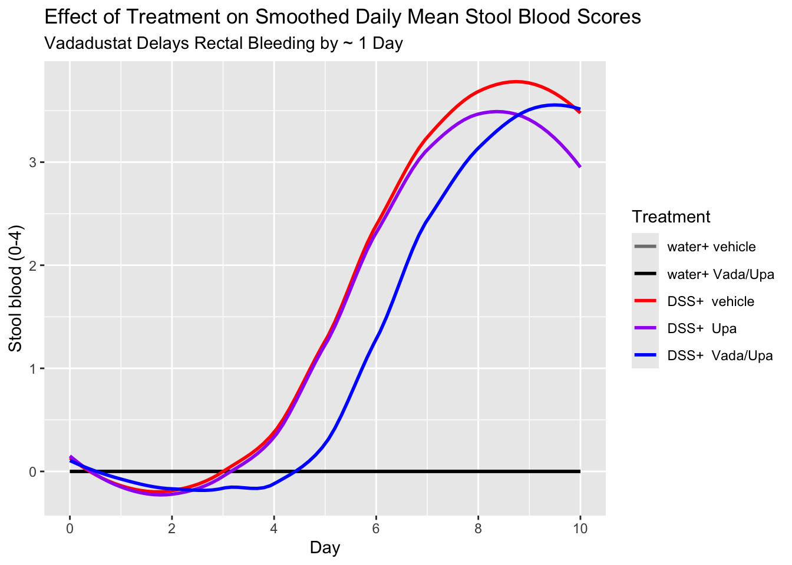
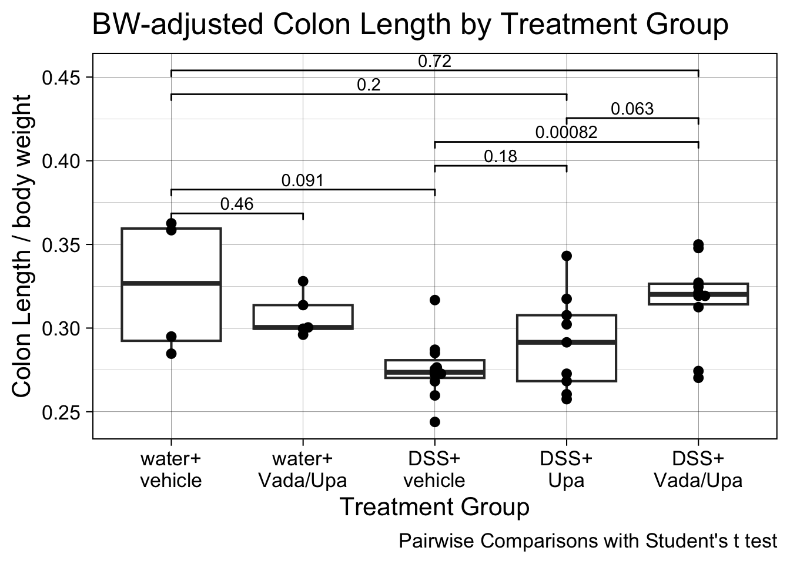

── Attaching core tidyverse packages ──────────────────────── tidyverse 2.0.0 ──
✔ dplyr 1.1.4 ✔ readr 2.1.5
✔ forcats 1.0.1 ✔ stringr 1.5.2
✔ ggplot2 4.0.0 ✔ tibble 3.3.0
✔ lubridate 1.9.4 ✔ tidyr 1.3.1
✔ purrr 1.1.0
── Conflicts ────────────────────────────────────────── tidyverse_conflicts() ──
✖ dplyr::filter() masks stats::filter()
✖ dplyr::lag() masks stats::lag()
ℹ Use the conflicted package (<http://conflicted.r-lib.org/>) to force all conflicts to become errors
Code
library(readxl)library(janitor)
Attaching package: 'janitor'
The following objects are masked from 'package:stats':
chisq.test, fisher.test
Code
library(ggbeeswarm)library(scales)
Attaching package: 'scales'
The following object is masked from 'package:purrr':
discard
The following object is masked from 'package:readr':
col_factor
DSS Mouse Experiment 2
This experiment was to test Upa/Vada vs Upa alone vs. DSS colitis.
This experiment used DSS in water at 3% for 8 days, rather than the planned 7, because the mice were slow to develop rectal bleeding. This led to only only one day of rest on regular drinking water.
Each arm of the study included C57BL6 male mice, 5 or 10 per group.
The groups were:
Negative controls (no DSS, vehicle gavage) - 5 mice - one lost
Drug controls (no DSS, Upa 30 mpk, Vada 3 mpk) - 5 mice
dat <- readxl::read_xlsx("tidy data for vada-upa experiment2.xlsx") |>clean_names() |>mutate(rx =factor(rx, ordered =TRUE,levels =c("water+ vehicle", "water+ Vada/Upa","DSS+ vehicle", "DSS+ Upa","DSS+ Vada/Upa"))) |>rename(ear_tag = mouse)dat_daily <- readxl::read_xlsx("BW blood data daily.xlsx") |> janitor::clean_names() |>mutate(mouse =as.factor(mice)) |>mutate(ear_tag =as.factor(ear_tag)) |>select(-mice) |>relocate(mouse)dat |>select(ear_tag, rx) |>mutate(ear_tag =as.factor(ear_tag)) ->dat2dat_daily|>left_join(dat2, by =join_by(ear_tag)) ->daily2
Need a body weight comparison here
Graph BW by day
Code
daily2 |>ggplot(aes(y = body_weight_g, x = day, group = mouse, color = rx)) +#geom_line() +#geom_point() +geom_smooth(aes(group = rx), se =FALSE)
`geom_smooth()` using method = 'loess' and formula = 'y ~ x'
Graph blood by day
Note minimal blood delay with Upa,
noticeably delayed blood when Vada added to Upa
Code
daily2 |>ggplot(aes(y = stool_blood, x = day, group = mouse, color = rx)) +#geom_line() +#geom_point() +geom_smooth(aes(group = rx), se =FALSE) +scale_color_manual(values =c("gray50", "black", "red", "purple", "blue")) +scale_x_continuous(breaks =seq(0,10, by=2)) +labs(color ="Treatment",x ="Day",y ="Stool blood (0-4)",title ="Effect of Treatment on Smoothed Daily Mean Stool Blood Scores",subtitle ="Vadadustat Delays Rectal Bleeding by ~ 1 Day")
`geom_smooth()` using method = 'loess' and formula = 'y ~ x'

Graph DAI by Day
??
Let’s compare the colon weights by group
Code
dat |>ggplot(aes(y= colon_weight, x = rx)) +geom_boxplot() +geom_beeswarm() +labs( x ="Treatment Group",y ="Colon Weight in grams",caption ="Pairwise Comparisons with Student's t test", title ="Colon Weight by Treatment Group")+ ggsignif::geom_signif(comparisons =list(c(1,2), c(1,3), c(3,4), c(3,5), c(4,5), c(1,4),c(1,5)),test ="t.test",step_increase =0.12) +scale_x_discrete(labels =label_wrap(6)) +theme_linedraw(base_size =16, base_family ="Arial")
Code
# try control for bwdaily2 |>filter(day ==10) ->day10wtdat |>mutate(ear_tag =as.factor(ear_tag)) |>left_join(day10wt) |>select(ear_tag, rx, colon_weight, body_weight_g) |>mutate(adj_colon_wt = colon_weight/body_weight_g) |>ggplot(aes(y= adj_colon_wt, x = rx)) +geom_boxplot() +geom_beeswarm() +labs( x ="Treatment Group",y ="Colon Weight / body weight",caption ="Pairwise Comparisons with Student's t test", title ="BW-adjusted Colon Weight by Treatment Group")+ ggsignif::geom_signif(comparisons =list(c(1,2), c(1,3), c(3,4), c(3,5), c(4,5), c(1,4),c(1,5)),test ="t.test",step_increase =0.12) +scale_x_discrete(labels =label_wrap(6)) +theme_linedraw(base_size =16, base_family ="Arial")
Joining with `by = join_by(ear_tag, rx)`
Warning: Removed 1 row containing non-finite outside the scale range
(`stat_boxplot()`).
Warning: Removed 1 row containing non-finite outside the scale range
(`stat_signif()`).
Warning: Removed 1 row containing missing values or values outside the scale range
(`geom_point()`).
Issues:
not much colon weight gain in DSS
colon wt loss in drug treated/ drug control
NS more colon wt loss in upa treated
signif more colon wt loss in double treated
May need to normalize to body weight
Now compare the colon lengths by group
Code
dat |>ggplot(aes(y= colon_length, x = rx)) +geom_boxplot() +geom_beeswarm() +labs( x ="Treatment Group",y ="Colon Length in cm",caption ="Pairwise Comparisons with Student's t test",title ="Colon Length by Treatment Group")+ ggsignif::geom_signif(comparisons =list(c(1,2), c(1,3), c(3,4), c(3,5), c(4,5), c(1,4),c(1,5)),test ="t.test",step_increase =0.12) +scale_x_discrete(labels =label_wrap(6)) +theme_linedraw(base_size =16, base_family ="Arial")
Code
# try control for bwdaily2 |>filter(day ==10) ->day10wtdat |>mutate(ear_tag =as.factor(ear_tag)) |>left_join(day10wt) |>select(ear_tag, rx, colon_length, body_weight_g) |>mutate(adj_colon_len = colon_length/body_weight_g) |>ggplot(aes(y= adj_colon_len, x = rx)) +geom_boxplot() +geom_beeswarm() +labs( x ="Treatment Group",y ="Colon Length / body weight",caption ="Pairwise Comparisons with Student's t test", title ="BW-adjusted Colon Length by Treatment Group")+ ggsignif::geom_signif(comparisons =list(c(1,2), c(1,3), c(3,4), c(3,5), c(4,5), c(1,4),c(1,5)),test ="t.test",step_increase =0.12) +scale_x_discrete(labels =label_wrap(6)) +theme_linedraw(base_size =16, base_family ="Arial")
Joining with `by = join_by(ear_tag, rx)`
Warning: Removed 1 row containing non-finite outside the scale range
(`stat_boxplot()`).
Warning: Removed 1 row containing non-finite outside the scale range
(`stat_signif()`).
Warning: Removed 1 row containing missing values or values outside the scale range
(`geom_point()`).
Issues:
some loss of length with drug control
big loss of length with DSS
partial restoration with Upa
More length restoration with Vada/Upa, but a ways from normal colon - colon ends up shorter, less heavy
May need to normalize to body weight
Now compare the colon ‘density’ (grams/cm) by group
Code
dat |>ggplot(aes(y= colon_density, x = rx)) +geom_boxplot() +geom_beeswarm() +labs( x ="Treatment Group",y ="Colon 'Density' in grams/cm",caption ="Pairwise Comparisons with Student's t test",title ="Colon 'Density' by Treatment Group",subtitle ="Colon 'Density' is weight in grams/cm in length")+ ggsignif::geom_signif(comparisons =list(c(1,2), c(1,3), c(3,4), c(3,5), c(4,5), c(1,4),c(1,5)),test ="t.test",step_increase =0.12) +scale_x_discrete(labels =label_wrap(6)) +theme_linedraw(base_size =16, base_family ="Arial")
This makes sense - no difference with drug control, big spleen in DSS, partial recovery with Upa, more recovery with vada/upa - to nearly normal.
Now compare the spleen weight to body mass ratio by group
Code
dat |>ggplot(aes(y= spleen_wt_bw, x = rx)) +geom_boxplot() +geom_beeswarm() +labs( x ="Treatment Group",y ="Spleen to Body Weight Ratio",caption ="Pairwise Comparisons with Student's t test",title ="Spleen to Body Weight Ratio by Treatment Group") + ggsignif::geom_signif(comparisons =list(c(1,2), c(1,3), c(3,4), c(3,5), c(4,5), c(1,4),c(1,5)),test ="t.test",step_increase =0.12) +scale_x_discrete(labels =label_wrap(6)) +theme_linedraw(base_size =16, base_family ="Arial")

This makes sense - no difference with drug control, big spleen in DSS, partial recovery with Upa, more recovery with vada/upa - still not entirely normal.
Now compare the day 10 Disease Activity Index
Code
dat |>ggplot(aes(y= day10_dia, x = rx)) +geom_boxplot() +geom_beeswarm() +labs( x ="Treatment Group",y ="Day 10 Disease Activity Index",caption ="Pairwise Comparisons with Student's t test",title ="Day 10 DAI by Treatment Group") + ggsignif::geom_signif(comparisons =list(c(1,2), c(1,3), c(3,4), c(3,5), c(4,5), c(1,4),c(1,5)),test ="t.test",step_increase =0.12) +scale_x_discrete(labels =label_wrap(6)) +theme_linedraw(base_size =16, base_family ="Arial")
Warning: Computation failed in `stat_signif()`.
Caused by error in `if (p_value < .Machine$double.eps) ...`:
! missing value where TRUE/FALSE needed
May need more recovery time - 4 days on water plus drugs?
Now compare the day 7 stool bleeding score
Code
dat |>ggplot(aes(y= day7_stool_bleeding, x = rx)) +geom_boxplot() +geom_beeswarm() +labs( x ="Treatment Group",y ="Day 7 Stool Bleeding Score",caption ="Pairwise Comparisons usiing Student's t Test\nToo many ties to calculate several p values",title ="Day 7 Stool Bleeding Score by Treatment Group")+ ggsignif::geom_signif(comparisons =list(c(1,3), c(2,3), c(3,4), c(3,5)),test ="t.test",step_increase =0.12) +scale_x_discrete(labels =label_wrap(6)) +theme_linedraw(base_size =16, base_family ="Arial")
Warning: Removed 1 row containing non-finite outside the scale range
(`stat_boxplot()`).
Warning: Removed 1 row containing non-finite outside the scale range
(`stat_signif()`).
Warning: Removed 1 row containing missing values or values outside the scale range
(`geom_point()`).
Possibly need more recovery time - 4 days on water?